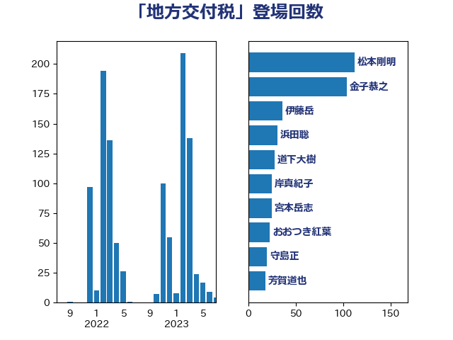

単語「地方交付税」

| 武田良太 | 自由民主党 | 133 回 |
| 金子恭之 | 自由民主党 | 104 回 |
| 芳賀道也 | 国民民主党 | 39 回 |
| 伊藤岳 | 日本共産党 | 33 回 |
| 岸真紀子 | 立憲民主党 | 32 回 |
| 本村伸子 | 日本共産党 | 17 回 |
| 柳ヶ瀬裕文 | 日本維新の会 | 16 回 |
| 櫻井周 | 立憲民主党 | 14 回 |
| 石川香織 | 立憲民主党 | 13 回 |
| 麻生太郎 | 自由民主党 | 13 回 |
| おおつき紅葉 | 立憲民主党 | 12 回 |
| 宮本岳志 | 日本共産党 | 12 回 |
| 赤羽一嘉 | 公明党 | 12 回 |
| 小沢雅仁 | 立憲民主党 | 11 回 |
| 田畑裕明 | 自由民主党 | 11 回 |
| 鈴木俊一 | 自由民主党 | 11 回 |
| 中司宏 | 日本維新の会 | 9 回 |
| 守島正 | 日本維新の会 | 9 回 |
| 平木大作 | 公明党 | 9 回 |
| 道下大樹 | 立憲民主党 | 9 回 |
| 岡本あき子 | 立憲民主党 | 8 回 |
| 杉久武 | 公明党 | 8 回 |
| 沢田良 | 日本維新の会 | 8 回 |
| 浜田聡 | NHK党 | 8 回 |
| 熊田裕通 | 自由民主党 | 8 回 |
| 田村憲久 | 自由民主党 | 8 回 |
| 神谷裕 | 立憲民主党 | 8 回 |
| 吉川元 | 立憲民主党 | 7 回 |
| 山東昭子 | 自由民主党 | 7 回 |
| 西岡秀子 | 国民民主党 | 7 回 |
| 吉田忠智 | 立憲民主党 | 6 回 |
| 宮路拓馬 | 自由民主党 | 6 回 |
| 鳩山二郎 | 自由民主党 | 6 回 |
| 川田龍平 | 立憲民主党 | 5 回 |
| 石井正弘 | 自由民主党 | 5 回 |
| 足立康史 | 日本維新の会 | 5 回 |
| 今村雅弘 | 自由民主党 | 4 回 |
| 岡本三成 | 公明党 | 4 回 |
| 新谷正義 | 自由民主党 | 4 回 |
| 細田博之 | 自由民主党 | 4 回 |
| 葉梨康弘 | 自由民主党 | 4 回 |
| 谷田川元 | 立憲民主党 | 4 回 |
| 高木毅 | 自由民主党 | 4 回 |
| 冨樫博之 | 自由民主党 | 3 回 |
| 塩川鉄也 | 日本共産党 | 3 回 |
| 宮内秀樹 | 自由民主党 | 3 回 |
| 島村大 | 自由民主党 | 3 回 |
| 後藤茂之 | 自由民主党 | 3 回 |
| 末松信介 | 自由民主党 | 3 回 |
| 萩生田光一 | 自由民主党 | 3 回 |
| 輿水恵一 | 公明党 | 3 回 |
| 野上浩太郎 | 自由民主党 | 3 回 |
| 野田聖子 | 自由民主党 | 3 回 |
| 鈴木庸介 | 立憲民主党 | 3 回 |
| 中西祐介 | 自由民主党 | 2 回 |
| 伊波洋一 | 無所属 | 2 回 |
| 伊藤渉 | 公明党 | 2 回 |
| 山口俊一 | 自由民主党 | 2 回 |
| 柘植芳文 | 自由民主党 | 2 回 |
| 柳本顕 | 自由民主党 | 2 回 |
| 武部新 | 自由民主党 | 2 回 |
| 江島潔 | 自由民主党 | 2 回 |
| 福田昭夫 | 立憲民主党 | 2 回 |
| 笠井亮 | 日本共産党 | 2 回 |
| 菅義偉 | 自由民主党 | 2 回 |
| 長友慎治 | 国民民主党 | 2 回 |
| 青木愛 | 立憲民主党 | 2 回 |
| 三ッ林裕巳 | 自由民主党 | 1 回 |
| 三原じゅん子 | 自由民主党 | 1 回 |
| 上杉謙太郎 | 自由民主党 | 1 回 |
| 上田清司 | 国民民主党 | 1 回 |
| 中西健治 | 自由民主党 | 1 回 |
| 今井絵理子 | 自由民主党 | 1 回 |
| 住吉寛紀 | 日本維新の会 | 1 回 |
| 倉林明子 | 日本共産党 | 1 回 |
| 勝部賢志 | 立憲民主党 | 1 回 |
| 古賀之士 | 立憲民主党 | 1 回 |
| 古賀友一郎 | 自由民主党 | 1 回 |
| 吉川ゆうみ | 自由民主党 | 1 回 |
| 坂本哲志 | 自由民主党 | 1 回 |
| 大口善徳 | 公明党 | 1 回 |
| 大塚耕平 | 国民民主党 | 1 回 |
| 山本博司 | 公明党 | 1 回 |
| 山本香苗 | 公明党 | 1 回 |
| 岩渕友 | 日本共産党 | 1 回 |
| 後藤祐一 | 立憲民主党 | 1 回 |
| 斎藤嘉隆 | 立憲民主党 | 1 回 |
| 斎藤洋明 | 自由民主党 | 1 回 |
| 朝日健太郎 | 自由民主党 | 1 回 |
| 杉本和巳 | 日本維新の会 | 1 回 |
| 東徹 | 日本維新の会 | 1 回 |
| 林芳正 | 自由民主党 | 1 回 |
| 根本匠 | 自由民主党 | 1 回 |
| 森屋宏 | 自由民主党 | 1 回 |
| 横沢高徳 | 立憲民主党 | 1 回 |
| 橘慶一郎 | 自由民主党 | 1 回 |
| 池下卓 | 日本維新の会 | 1 回 |
| 湯原俊二 | 立憲民主党 | 1 回 |
| 源馬謙太郎 | 立憲民主党 | 1 回 |
| 田名部匡代 | 立憲民主党 | 1 回 |
| 田村智子 | 日本共産党 | 1 回 |
| 田村貴昭 | 日本共産党 | 1 回 |
| 石井苗子 | 日本維新の会 | 1 回 |
| 礒崎哲史 | 国民民主党 | 1 回 |
| 福岡資麿 | 自由民主党 | 1 回 |
| 稲津久 | 公明党 | 1 回 |
| 篠原孝 | 立憲民主党 | 1 回 |
| 緒方林太郎 | 無所属 | 1 回 |
| 美延映夫 | 日本維新の会 | 1 回 |
| 若宮健嗣 | 自由民主党 | 1 回 |
| 菅直人 | 立憲民主党 | 1 回 |
| 藤木眞也 | 自由民主党 | 1 回 |
| 藤田文武 | 日本維新の会 | 1 回 |
| 西銘恒三郎 | 自由民主党 | 1 回 |
| 近藤和也 | 立憲民主党 | 1 回 |
| 野田佳彦 | 立憲民主党 | 1 回 |
| 金田勝年 | 自由民主党 | 1 回 |
| 鈴木淳司 | 自由民主党 | 1 回 |
| 長谷川岳 | 自由民主党 | 1 回 |
| 阿部弘樹 | 日本維新の会 | 1 回 |